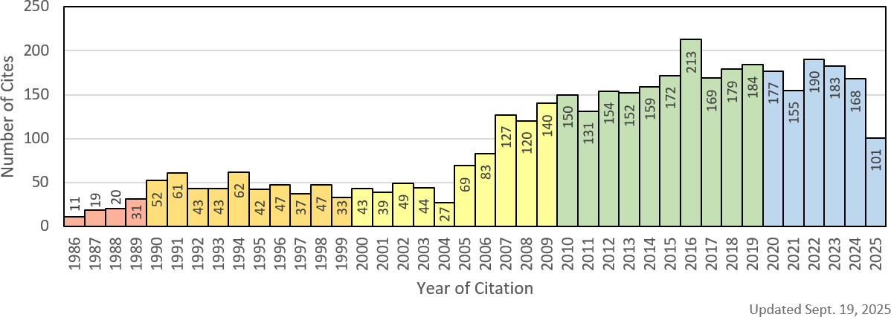
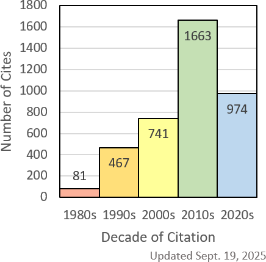
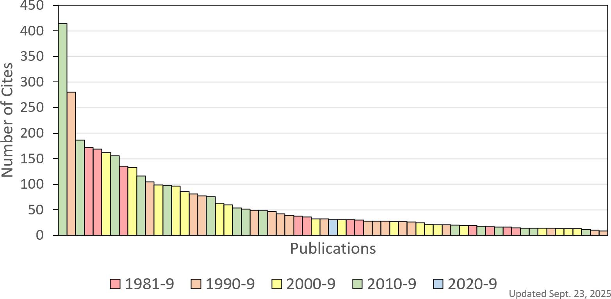
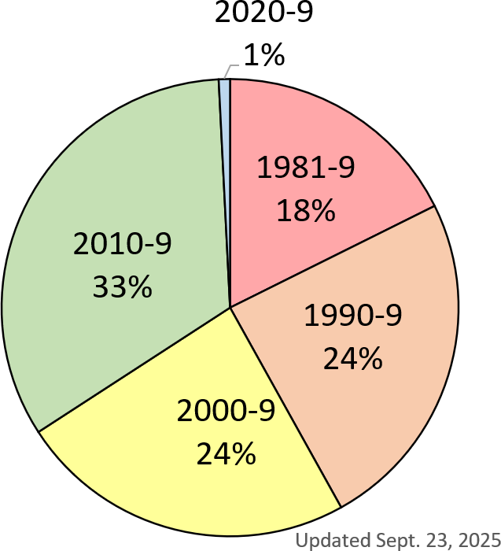
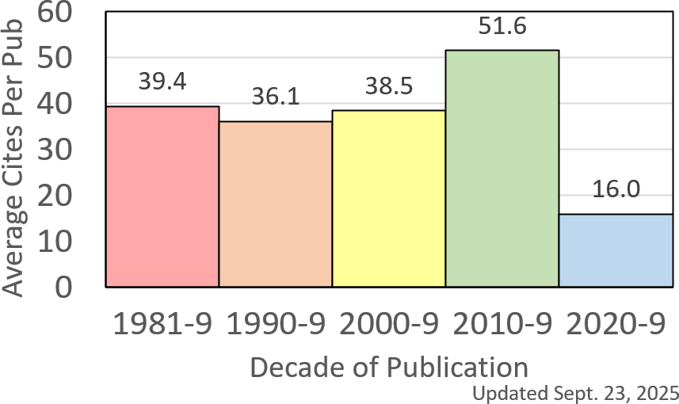
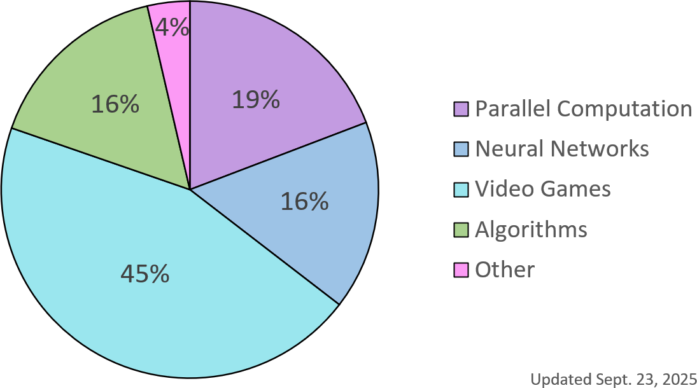

One method of measuring an academic publication's impact is to count the number
of times it was cited in other publications. Consequently, one way of measuring an academic scholar's impact
is to statistically analyze the impact of their publications.
This has resulted in the invention of various
citation indices.
However, these indices fail to answer important questions such as the following.
- How has the overall impact of my publications changed over time?
(Section 1).
- How is the per-publication impact distributed?
(Section 2).
- In which time period have I published things that have had the highest impact?
(Section 3).
- In which subject have my publications had the highest impact?
(Section 4).
The following sections are a deeper analysis of my cites from
Google Scholar.

Fig. 1.1: Number of cites per year of citation.
Fig. 1.1 shows the number of cites that my
publications received by year of citation. Since I started publishing
about the time I received my PhD in 1984, the first cites appeared in 1984.
Fig. 1.1 shows a steady increase in cites during my tenure-track
period, showing a peak in 1991 when I received tenure and another peak in 1994.
Thereafter there is a steady decline to a low in 2004. This is probably because
my interests switched from theoretical computer science to game development,
necessitating a long period of retraining and concentration on teaching game
programming. Besides, there was nowhere to publish video game research
even if took it up.
In the early 200s I took on Tim Roden as a PhD student. He turned me on to
procedural content generation and from there to more research topics in
game development. As we found new publication venues for this research,
my cites rose from 2005 onwards to a level of about 150-180 per year.
Other reasons for this noticable increase (compare the left-hand
side of Fig. 1.1 to the right-hand side)
may be:
- Everybody found the internet in the early 2000s.
- Google Scholar became the place to find citation statistics,
superceding the old CiteSeer software.
- Conferences and workshops on video games started to appear.
- Mainstream academic publications became more sympathetic to video game research.

Fig. 1.2: Number of cites per decade of citation.
Fig. 1.2 shows the number of cites that my
publications received by decade of citation. The figure for the 1980s
is low because I only started publishing mid-decade. Thereafter there is
a solid increase from the 1990s to the 2010s. The figure for the 2020s
looks like it may come close to matching the 2010s by the end of the decade.
Conclusion
The impact of my publications was the highest from the mid-2000s onwards,
which (perhaps coincidentally) began about the time I was promoted to Full Professor.

Fig. 2.1: Number of cites per publication for publications with at least 10 cites.
Fig. 2.1 shows the sorted
number of cites per publication for publications that have been cited at least 10 times.
Each vertical bar indicates the number of cites for a single publication
with the color indicating the decade of publication.
Conclusion
If we define a high impact publication to be
one that has been cited 10 or more times, then I have high-impact
publications over the four decades of my academic career.
Fig. 3.1 shows the proportion of cites per
decade as a fraction of my total number of cites.
This fraction increased steadily from the 1990s to the 2010s.

Fig. 3.1: Proportion of cites by decade of publication.
Fig. 3.1 shows the proportion of cited publications per
decade as a fraction of all of my cited publications.
This fraction also increased steadily from the 1990s to the 2010s.

Fig. 3.2: Proportion of cited publications by decade of publication.
Fig. 3.2 shows that the 1980s was my least productive decade with
20% of my cited publications and the e remaining decades saw around 25% of
my cited publications each, which is about
what you would expect if cites were uniformly distributed over the decades.

Fig. 3.3: Average cites per cited publication by decade of publication.
A clearer picture emerges if you divide out the data used to produce
Fig. 3.1 and Fig. 3.2 to get the
average number of cites per publication in each of the four decades,
as shown in Fig. 3.3. Therefore, we may
conclude that my publications in the 2010s
had the highest number of cites per paper, and hence the highest impact per paper.
Conclusion
-
If we define the total impact of a decade to be the total number of cites
received for publications during that time period, then
my total impact has increased over time.
-
If we define the productivity of a decade to be the number of cited
publications during that time period, then
my productivity has increased or remained steady over time.
-
If we define the average impact of a decade to be the average number of cites
received for publications during that time period, then
my average impact shows only a slight decrease over time,
which is to be expected because things that were published recently
have had less time to be cited than those that were published before them,
with an increase in the 2010s which may be due to the subject matter.
Section 3 alludes to the fact that my publications can
be grouped roughly by subject. In more detail, they can be broken
up into five areas:
neural networks (including threshold circuits, Boltzmann machines,
and Hopfield networks),
parallel computation
(including parallel complexity theory, circuit complexity, interconnection networks,
routing, and sorting networks),
video games
(including procedural content generation),
algorithmsother
(including my guides for referees and presenting papers).
Publications that fit into more than one of the above categories are
placed somewhat arbitrarily into the one that I think is best.
For example, threshold circuit complexity is included under neural networks,
while circuit complexity using other types of gate are included under
parallel computing.

Fig. 4.1: Proportion of cites by subject.
While
Fig. 4.1 shows that my video game publications
received more cites than any two of the remaining categories combined,
Fig. 4.2 shows that I published more in the video game
category than any other by quite a large margin.

Fig. 4.2: Proportion of cited publications by subject.
Fig. 4.3 puts things in a clearer perspective.

Fig. 4.3: Average cites per cited publication by subject.
According to Fig. 4.3, my
video game (VG), and algorithms (AL)
publications have
a higher average number of cites per paper than the other categories, neural network (NN),
parallel computation (PC), and especially other (OT).
Conclusion
-
If we define the total impact of a subject area to be the total number of cites
received for publications in that area, then
my video game publications have the highest total impact.
-
If we define the productivity of a subject area to be the number of cited
publications in that area, then
my video game publications have the highest productivity.
-
If we define the average impact of a subject area to be the average number of cites
received for publications in that area, then my neural network,
video game, and algorithms
publications have the highest average impact.